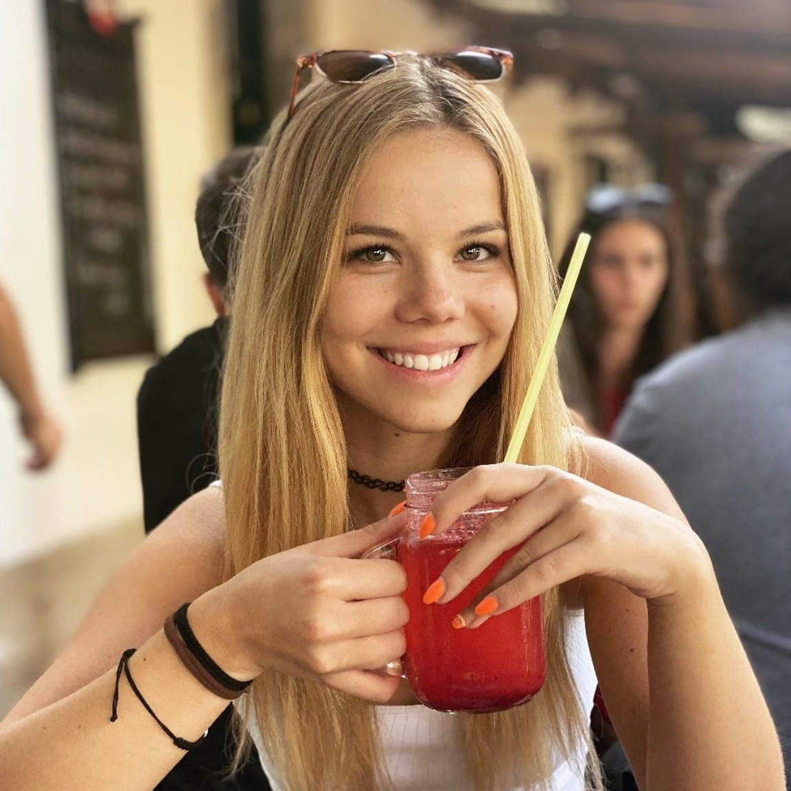

Neszmélyi Zsófia Laura vagyok, a Budapesti Műszaki és Gazdaságtudományi Egyetemen első éves hallgató, ipari termék - és formatervező mérnöki szakon.
Mivel a rajzolás számomra még nagyon friss, új hobbi, szakmai tapasztalattal pedig még nem rendelkezem, sajnos nem sok munkám látható az oldalon... egyelőre.